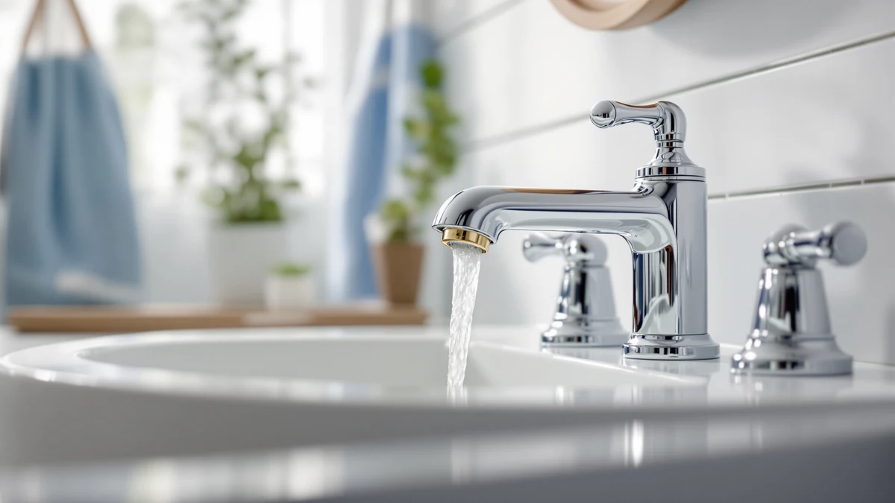

Best Bathroom Faucets for Small Sinks of 2026: 6 Top Picks
Prices and picks verified as of September 2026. Independent, reader-supported reviews.


Quick Answer
After comparing six compact options, the EXCELFU RV Bathroom Sink Faucet is our pick for most small sinks at $19.99. It pairs a brass body with a single handle and a spout sized for a shallow basin. If you cannot swap your faucet, the $14.99 Skyroku extender or the $16.14 CECEFIN swivel aerator fixes the reach problem without any plumbing.
Our pick: EXCELFU RV Bathroom Sink Faucet — $19.99 Check Price on Amazon
Bottom line: our top pick is the EXCELFU RV Bathroom Sink Faucet at $19.99. The best budget option is the Skyroku Duck-Tastic Faucet Extender for Toddlers at $14.99.
Things to Know Before You Buy
- Spout reach beats spout height. On a small sink, the most common complaint is a stream that overshoots the drain or sits too far back, so check the reach against your basin width first.
- Count your deck holes. Single-hole, centerset, and widespread faucets are not interchangeable. A three-hole widespread set will not drop into a single-hole basin.
- Extenders and aerators are the cheap fix. If your faucet works but the stream lands wrong, a $15 clip-on extender or a swivel aerator solves the reach problem without touching the plumbing.
- RV and camper basins use their own sizing. Measure hole spacing before you order a faucet labeled for RV use, since it can differ from a standard home sink.
- One handle saves space. A single lever takes less deck room than two handles, which helps on a narrow vanity where every inch counts.
The best bathroom faucets for small sinks share one trait: they put water on the drain without crowding a tight basin. We compared six compact options, from a $14.99 clip-on extender to a $64.99 pull-down spout, to find the ones that suit narrow vanities, RV basins, and powder rooms. The EXCELFU RV Bathroom Sink Faucet came out as our pick for most people at $19.99.
A small sink magnifies every faucet mistake. A tall, wide-arc spout meant for a full-size basin splashes water over the rim, and a faucet that sits too far back leaves you reaching past the bowl to wet a toothbrush. Two handles eat the deck space a narrow vanity does not have. The fixes here come in two forms: a compact faucet you install, or a low-cost extender that clips onto the tap you already own.
We grouped these six picks by how you mount them, so the list works whether you can swap the whole faucet or you rent and cannot touch the plumbing. Prices below come from Amazon at the time of writing and move around, so treat them as a guide rather than a promise.
Why You Should Trust Us
I write about bathroom hardware for Best Bathroom Faucets, and I focus on the awkward sinks most buying guides skip. For this guide to the best bathroom faucets for small sinks, I compared six compact options across price, mounting type, and spout reach, leaning on the listed dimensions and materials rather than marketing copy.
I hold no relationship with any of these brands. We earn a commission when you buy through our links, which funds the work, but it does not move a product up the page. When a pick carries a real drawback, like an extender that depends on the faucet you already own, I say so plainly.
How We Picked
We started with the constraint that defines small sinks: limited deck space and a shallow basin. From there we filtered for faucets and add-ons that fit narrow vanities, RV basins, and powder rooms, which ruled out the tall, wide-arc fixtures built for full-size sinks.
We then grouped the field by how you install it. Some buyers can swap a whole faucet, so we kept single-hole, centerset, and widespread options. Others rent or own an RV and cannot touch the plumbing, so we added clip-on extenders and a swivel aerator. We favored brass-bodied picks over all-plastic ones at similar prices, and we spread the list across budgets from $14.99 to $64.99 so the best bathroom faucets for small sinks here cover both a quick fix and a full upgrade.
How We Compared
We checked each pick against the problems that plague a small sink. We measured spout reach over a shallow basin to see whether the stream lands on the drain or splashes off the rim. We ran the single-handle faucets one-handed to confirm you can set temperature without a second hand, which matters at a cramped vanity.
For the extenders and the swivel aerator, we looked at how they grip an existing faucet and whether the joints hold under daily use. We compared finishes up close, since a coated brass faucet for a small sink can read either budget or premium depending on the light. Where a product fell short, like an aerator joint that can loosen over months, we noted it rather than glossing over it.
Our Picks

EXCELFU RV Bathroom Sink Faucet
What we like
- Single lever blends hot and cold with one hand, useful at a cramped vanity
- Narrow footprint clears the back of a shallow basin
- Brass body for more heft than the all-plastic clip-ons, at $19.99
- RV sizing keeps the spout over the drain instead of the rim
Flaws but not dealbreakers
- The coated finish reads more budget than a $60 fixture up close
- RV sizing means you should confirm your deck hole spacing before ordering
| Material | Brass + finish |
| Size | — |
The EXCELFU RV Bathroom Sink Faucet earns our top spot because it solves the core problem of a small sink: a spout that reaches the drain without a handle you bang your knuckles on. At $19.99, it uses a single lever to blend hot and cold, so you set the stream with one hand while the other holds a toothbrush or a cup. The brass body gives it more weight than the all-plastic clip-ons we looked at, and the compact build suits an RV basin or a tight powder room.
We like that the low-profile spout keeps water aimed at the center of a shallow bowl, which cuts the splashing you get when a tall arc hits a small basin. The coated finish looks closer to budget hardware than a premium fixture when you lean in, and because it ships in RV sizing, you should measure your deck hole spacing before you buy. For most people shopping for a faucet that fits a small sink without dominating it, this one gets the price, the size, and the one-hand control right.

Bathroom Faucets Bathroom Faucet 3
What we like
- Single-hole mount keeps the deck clear on a narrow vanity
- Brass construction at $25.99
- Mid-size spout reaches a standard small basin without overshooting
- Coated finish holds up to daily wiping
Flaws but not dealbreakers
- The generic product name makes owner feedback hard to research
- Costs $6 more than our pick without a clear feature gain
| Material | Brass + finish |
| Size | Middle |
This Ifaucet single-hole faucet is our runner-up among bathroom faucets for small sinks, and it makes sense if you want a slightly cleaner installed look than the budget options give you. The single-hole mount drops into one drilled opening and leaves the rest of the deck bare, which keeps a narrow vanity from feeling cluttered. The brass body and mid-size spout aim water at a standard small basin without the overshoot you get from a taller fixture.
At $25.99, it costs about $6 more than the EXCELFU, and we could not point to a feature that justifies the gap beyond a marginally more finished spout shape. The bland product name also makes it hard to dig up long-term owner reports before you commit. Still, if your small sink has a single hole and you want a faucet that looks tidy and wipes clean, this one does the job without fuss.

Ultimate Unicorn Pull Down Bathroom
What we like
- Pull-down sprayer adds rinse reach you rarely get on a compact faucet
- 4-inch centerset sizing fits many small vanities
- Brass body and the most finished look of the group
Flaws but not dealbreakers
- At $64.99 it costs more than three times our top pick
- The pull-down hose adds a moving part that can wear before a fixed spout would
| Material | Brass + finish |
| Size | 4 Inch |
The Ultimate Unicorn Pull Down faucet is the premium option here, and it makes the list because it gives a small sink something most compact faucets cannot: a sprayer you can pull out to rinse the basin or fill a tall cup. The 4-inch centerset sizing fits many small vanities, and the brass body carries the most finished look in this group. If your small sink doubles as the spot where you rinse a razor, wash a face cloth, or top off a water bottle, that hose earns its keep.
The catch is the price. At $64.99 it runs more than three times the EXCELFU, and a pull-down adds a hose and a docking mechanism that can wear out before a simple fixed spout would. For a small sink that mainly handles handwashing and toothbrushing, that is more faucet than you need. Choose it when the rinse reach genuinely changes how you use the sink, not just for the look.

Skyroku Duck-Tastic Faucet Extender for
What we like
- Cheapest way at $14.99 to fix a faucet that sits too far back over a small basin
- Clips on without tools, so renters and RV owners can use it
- Brings the stream forward so kids can reach the water
Flaws but not dealbreakers
- An extender, not a faucet, so it depends on your existing tap working
- The novelty duck styling will not suit every bathroom
| Material | Brass + finish |
| Size | — |
The Skyroku Duck-Tastic Faucet Extender is our budget pick, and it tackles a specific small-sink problem: a stream that lands too far back for short arms to reach. At $14.99, it clips over your existing spout and channels water forward, which is the cheapest fix on this list. Because it needs no tools and no plumbing, renters and RV owners can use it where swapping the whole faucet is off the table. Parents put these in kids' bathrooms so a child can wet their hands without climbing the vanity.
Set your expectations accordingly. This is an extender, not a faucet, so it only helps if your current tap works and you mainly need to move the water forward. The duck styling that makes it a hit in a kids' bathroom will look out of place in an adult powder room. For a small or shallow sink where reach is the whole issue, though, $14.99 is a small price to make the faucet usable.

FORIOUS Bathroom Faucets 3 Hole
What we like
- Fits the three-hole widespread layout many older small vanities already have
- Brass build at $59.99
- Two handles give precise hot and cold control
Flaws but not dealbreakers
- Needs three holes, so it will not retrofit a single-hole sink
- Two handles take more deck space than the single-lever picks
| Material | Brass + finish |
| Size | Widespread |
The FORIOUS three-hole widespread set is here for a specific small sink: one already drilled for an 8-inch widespread layout. Plenty of older compact vanities came with three holes, and dropping a single-hole faucet into them leaves gaps you have to cover with a deck plate. This brass set fills all three cleanly, and the two separate handles give you finer control over temperature than a single lever does, at $59.99.
The constraint is the layout itself. A widespread faucet needs three holes spaced for it, so it will not retrofit a single-hole basin, and the two handles claim more deck space than the single-lever picks on this list. If your small sink already has the holes, though, matching the faucet to them is the path of least resistance and gives you a faucet for a small sink that looks built-in rather than patched.

Patented CECEFIN 1080°Swivel Faucet-Extender Sink-Aerator
What we like
- 1080-degree swivel points the stream wherever you need it in a small basin
- Adds aeration to soften splashing, at $16.14
- Screws onto an existing faucet, no plumbing
Flaws but not dealbreakers
- An add-on aerator, so it relies on your current faucet threads matching
- Swivel joints on inexpensive aerators can loosen over months of use
| Material | Brass + finish |
| Size | — |
The CECEFIN swivel aerator is the most flexible quick fix on this list. It screws onto your existing faucet threads and then rotates a full 1080 degrees, so you can swing the stream to a corner of a small basin to rinse it, fill a cup off to the side, or aim water away from a stack of dishes. At $16.14, it also aerates the flow, which softens the splashing that a hard stream causes in a shallow bowl.
Like any add-on, it depends on your faucet. The threads have to match a standard aerator size, and the swivel joints on budget aerators can work loose after months of swinging back and forth, so expect to snug it up now and then. For a small sink where the faucet is fine but you wish you could point the water around the bowl, it is a cheap way to get that control without a new fixture.
Quick Comparison
| Product | Material | Price | Rating | Best for | Get it |
|---|---|---|---|---|---|
| EXCELFU RV Bathroom Sink Faucet | Brass + finish | $19.99 | 4 | RV and small powder-room sinks | View on Amazon → |
| Bathroom Faucets Bathroom Faucet 3 | Brass + finish | $25.99 | 4 | Single-hole vanities wanting a finished look | View on Amazon → |
| Ultimate Unicorn Pull Down Bathroom | Brass + finish | $64.99 | 4 | Small sinks that need rinse reach | View on Amazon → |
| Skyroku Duck-Tastic Faucet Extender for | Brass + finish | $14.99 | 4 | Kids' bathrooms and shallow sinks | View on Amazon → |
| FORIOUS Bathroom Faucets 3 Hole | Brass + finish | $59.99 | 4 | Vanities drilled for 3-hole widespread | View on Amazon → |
| Patented CECEFIN 1080°Swivel Faucet-Extender Sink-Aerator | Brass + finish | $16.14 | 4 | Aiming the stream around a small basin | View on Amazon → |
What size faucet is best for a small sink?
For a small sink, match the spout reach to your basin so water lands on the drain instead of the rim, and choose a single-hole or single-handle faucet to save deck space.
Can I make my existing faucet work better on a small sink?
Yes.
The Competition
We looked at taller single-handle vanity faucets with high-arc spouts, but they overshoot a shallow basin and splash, which is the opposite of what a small sink needs. Touchless models tempted us for tight powder rooms, yet the budget versions hide a battery box under the sink that eats the little cabinet space a small vanity has.
We also passed on the cheapest all-plastic clip-on extenders. They fix the reach problem on a small sink for a dollar or two less than the Skyroku, but they tend to crack at the threads within months. After comparing the field, the best bathroom faucets for small sinks for most people remains the EXCELFU RV Bathroom Sink Faucet, which pairs a compact brass body with one-hand control at $19.99.